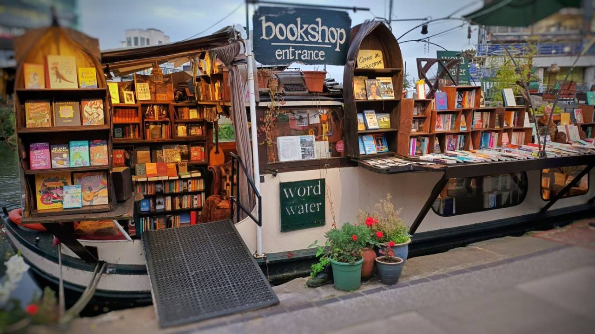
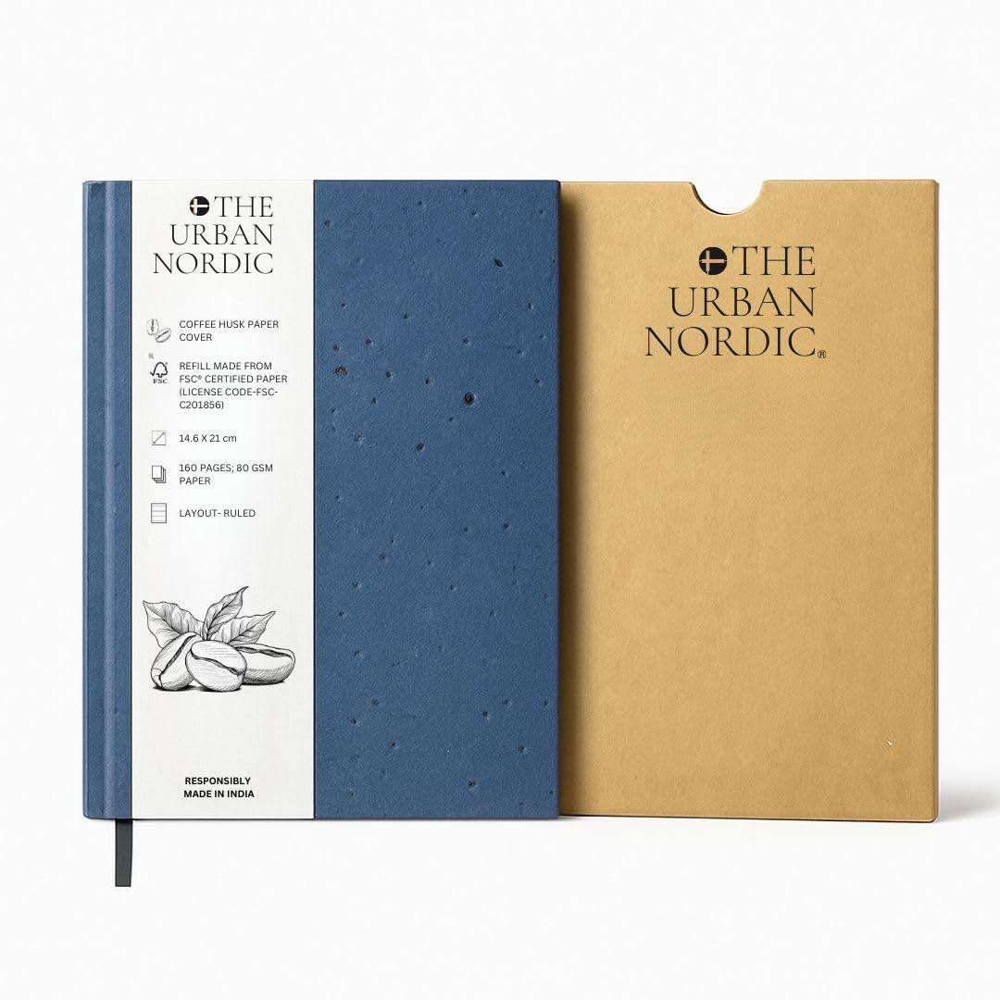
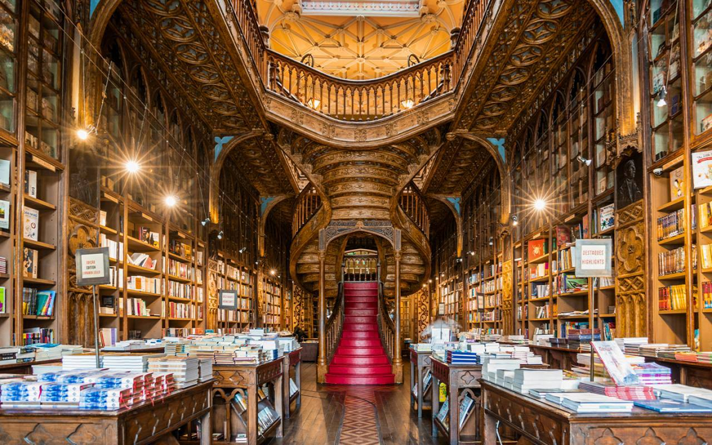

У порту Лондона відкрили унікальну бібліотеку на воді, розташовану на відреставрованому історичному судні. Відвідувачі можуть читати рідкісні видання, насолоджуючись краєвидами Темзи крізь панорамні ілюмінатори.
Шведський стартап почав випускати блокноти та книги, папір для яких виготовляють із залишків кавової гущі. Такі видання мають ледь відчутний аромат еспресо та унікальну текстуру сторінок із дрібними вкрапленнями.


Старовинна книгарня "Livraria Lello" в Португалії, яка надихнула Джоан Роулінг на створення кабінету Дамблдора, оголосила про нічні екскурсії при свічках. Це перший випадок, коли фанатам дозволять побачити закриті архіви закладу після заходу сонця.